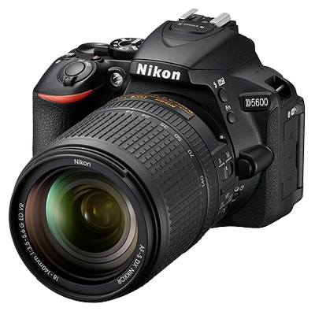

Nikon D5
Product Highlights 20.8MP FX-Format CMOS Sensor EXPEED 5 Image Processor 3.2" 2.36m-Dot Touchscreen LCD Monitor 4K UHD Video Recording at 30 fps Multi-CAM 20K 153-Point AF ความละเอียด :20.8 Megapixel ช่วงเลนส์(ซูม)
:n/a หน้าจอ :3.2 ระบบกันสั่น :n/a
ประกันศูนย์ Body (เช็คสินค้าก่อนสั่งซื้อ) ราคา 219,000.00 บาท
Nikon D810
กล้อง nikon D810 ดีไซน์ใหม่หมดจดเพื่อคุณภาพของภาพขั้นสุดยอด
ความละเอียด :37.09 Megapixel ช่วงเลนส์(ซูม) :n/a หน้าจอ :3.2 ระบบกันสั่น :n/a
ประกันร้าน ราคา 82,900.00 บาท
ประกันร้าน
Kit 24-120 Vr ราคา 101,900.00 บาท
ประกันศูนย์ Body (เช็คสินค้าก่อนสั่งซื้อ ราคา บาท
Nikon D500
Product Highlights 20.9MP DX-Format CMOS Sensor EXPEED 5 Image Processor 3.2" 2,539k-Dot Tilting Touchscreen LCD 4K UHD Video Recording at 30 fps Multi-CAM 20K 153-Point AF ความละเอียด :20.9 Megapixel ช่วงเลนส์(ซูม)
:n/a หน้าจอ :3.2 ระบบกันสั่น :n/a
ประกันศูนย์ Body (เช็คสินค้าก่อนสั่งซื้อ) ราคา 69,900.00 บาท
Nikon D750
24.3MP FX-Format CMOS Sensor EXPEED 4 Image Processor แอลซีดี 3.2 "1,229k-Dot RGBW บันทึกวิดีโอ Full HD 1080p ที่ 60 ความละเอียด :24.3 Megapixel ช่วงเลนส์(ซูม) :n/a หน้าจอ :3.2 ระบบกันสั่น :n/a
ประกันร้าน
Body ราคา 54,900.00 บาท
ประกันร้าน Kit 24-120 VR ราคา 72,900.00 บาท
ประกันศูนย์ Kit 24-120 VR (ราคาเงินสด) ราคา 76,500.00 บาท
Nikon D610
Nikon D610 คุณสมบัติที่สำคัญ 24.3MP Full-frame
เซ็นเซอร์ CMOS ( 10.5MP DX-format crop mode) ISO 100-6400 ( ขยายได้ถึง ความละเอียด :24.3 Megapixel ช่วงเลนส์(ซูม) :n/a หน้าจอ :3.2″ ระบบกันสั่น :No
ประกันร้าน
ราคา 40,900.00 บาท
ประกันร้าน Kit 24-85mmราคา 54,900.00 บาท
ประกันศูนย์ Body ราคา 43,900.00 บาท
Nikon D7200
Product Highlights 24.2MP DX-Format CMOS Sensor EXPEED 4 Image Processor No Optical Low-Pass Filter 3.2" 1,229k-Dot LCD Monitor Full HD 1080p Video Recording at 60 fps Multi-CAM ความละเอียด :24.2 Megapixel
ช่วงเลนส์(ซูม) :n/a หน้าจอ :3.2 ระบบกันสั่น :n/a
ประกันร้าน Body ราคา 27,500.00 บาท
ประกันร้าน Kit 18-55 VR ราคา 30,500.00 บาท
ประกันร้าน Kit 18-140 VR ราคา 35,900.00 บาท
ประกันศูนย์ Body ราคา 32,500.00
บาท
Nikon D7100
กล้องดิจิตอล Nikon D7100 ให้ภาพถ่ายมีคุณภาพที่น่าตื่นตะลึงเช่นเดียวกับกล้อง ความละเอียด :24.1 megapixels. ช่วงเลนส์(ซูม) :n/a หน้าจอ :3.2″
ระบบกันสั่น :Unknown
ประกันร้าน Body ราคา
21,500.00 บาท
ประกันร้าน Kit 18-55 VR ราคา 24,500.00 บาท
ประกันร้าน Kit 18-140 VR ราคา 30,500.00 บาท

Nikon D5600
Product Highlights 24.2MP DX-Format CMOS Sensor EXPEED 4 Image Processor No Optical Low-Pass Filter 3.2" 1,229k-Dot LCD Monitor Full HD 1080p Video Recording at 60 fps Multi-CAM ความละเอียด :24.2 Megapixel
ช่วงเลนส์(ซูม) :n/a หน้าจอ :3.2 ระบบกันสั่น :n/a
ประกันศูนย์ Body(เช็คสินค้าก่อนสั่งซื้อ) ราคา 32,500.00 บาท
ประกันศูนย์ kit 18-140mm VR ฟรี SD 16 GB.+ Bag (เช็คสินค้าก่อนสั่งซื้อ) ราคา 41,500.00 บาท
Nikon D5500 กล้อง Nikon
D5500 กล้อง DSLR ระดับ Mid-Range เมื่อเทียบกับตัวเก่าอย่าง Nikon D5500 ความละเอียด :24. Megapixel ช่วงเลนส์(ซูม) :n/a หน้าจอ :3.2″ ระบบกันสั่น :No
ประกันศูนย์ kit 18-55 vr(เช็คสินค้าก่อนสั่งซื้อ
) ราคา 26,900.00 บาท
ประกันศูนย์ kit 18-140 vr(เช็คสินค้าก่อนสั่งซื้อ ) ราคา 33,500.00 บาท
Nikon D5300
Nikon ประกาศเปิดตัวกล้อง DSLR รุ่นใหม่ล่าสุด D5300 ที่มาพร้อม Wi-Fi และ GPS ในตัว ความละเอียด :24.2 Megapixel ช่วงเลนส์(ซูม) :n/a หน้าจอ :3.2
ระบบกันสั่น :No
ประกันEC-Mall Kit 18-55VR
II ราคา 18,900#.00 บาท ประกัน EC-Mall Kit 18-140 VR ราคา 25,500.00 บาท